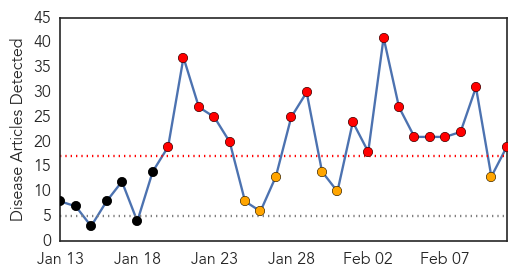
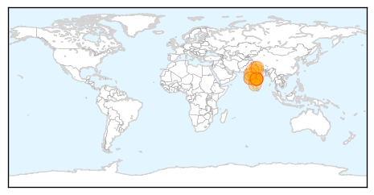
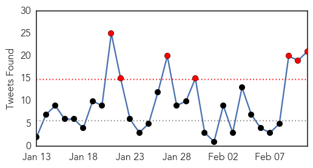
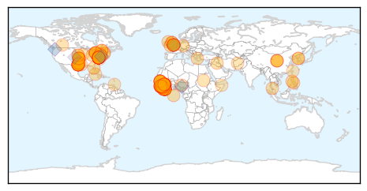

Swine Flu
30-Day Web Trend
17 alerts, 6 warnings

30-Day Twitter Trend
0 alerts, 0 warnings

Article Locations
Article Confidences

Top Articles:
- 1.000
- 216 dead across India due to swine flu in February
- 0.998
- Swine flu claims life in Hooghly, 9 affected in Kolkata
- 0.997
- Swine flu in India: 17 succumb to Swine Flu in Indore
- 0.997
- Rajasthan reels under swine flu, toll climbs to 73
- 0.994
- In 24 hours, 16 Mumbaikars test positive for swine flu
- 0.993
- 34 Fresh Cases of H1N1 in City Limits
- 0.992
- Union Health Minister J P Nadda reviews swine flu situation in Gujarat
- 0.992
- H1N1 death toll reaches 14 in State
- 0.991
- Maharashtra on alert after spurt in H1N1 cases
- 0.986
- Give swine flu vaccine to health workers: Govt
- 0.984
- Swine flu on the rise in Uttar Pradesh: Health officials
- 0.981
- Health Ministry holds review meeting on H1N1
- 0.977
- Health Ministry holds review meeting on H1N1
- 0.968
- Health Ministry reviews preventive measures against H1N1
- 0.964
- Health Ministry holds review meeting on H1N1
- 0.964
- Indiablooms - First Portal on Digital News Management
- 0.882
- H1N1 toll crosses 100, over 1,000 tested positive
- 0.881
- A(H1N1): two deaths reported late
- 0.860
- 3 more test positive for H1N1
Top Tweets:
-
No tweets found for Feb 11, 2015
Ebola
30-Day Web Trend
0 alerts, 0 warnings

30-Day Twitter Trend
7 alerts, 0 warnings

Article Locations
Article Confidences

Top Articles:
- 1.000
- Ebola’s Toll Was Horrific. It Could Have Been Much Worse
- 1.000
- FACT SHEET: Progress in Our Ebola Response at Home and Abroad
- 1.000
- White House Press Release on Ebola
- 1.000
- U.S. withdrawing troops fighting Ebola in Africa
- 1.000
- U.S. to Withdraw Troops from Ebola Mission in West Africa — Naharnet
- 1.000
- US to withdraw troops from Ebola mission in West Africa
- 1.000
- The state of Ebola: where it has been and where it is going
- 1.000
- CWRU researchers focus on early Ebola detection; one of 58 teams to get "rapid response" funding
- 1.000
- Ebola Making Alarming Comeback in West Africa; Cases on the Rise
- 1.000
- US to withdraw troops from Ebola mission in West Africa
- 1.000
- US withdrawing most troops fighting Ebola in West Africa
- 0.999
- US to withdraw troops from Ebola mission in West Africa
- 0.999
- Latest Ebola News: Challenges remain in bringing cases to zero: WHO, UN
- 0.999
- Ebola: No news is good news
- 0.999
- Obama says US has 'risen to the challenge' of fighting Ebola
- 0.999
- Ebola Threatens Economic Gains in Affected Countries
- 0.999
- White House Says Progress Being Made in Fight Against Ebola
- 0.999
- Obama says US has 'risen to the challenge' of fighting Ebola
- 0.999
- Obama says US has 'risen to the challenge' of fighting Ebola; troops withdrawing
- 0.999
- As U.S. troops head home, Obama marks "next phase" of Ebola fight
- 0.999
- US to withdraw #Ebola troops despite new cases
- 0.999
- More anti-Ebola hurrays as US to withdraw troops from West Africa mission
- 0.999
- Obama says US has ‘risen to the challenge’ of fighting Ebola
- 0.999
- West Africa sees spike in Ebola cases as decline stalls: WHO
- 0.999
- UPDATE 2-West Africa sees spike in Ebola cases as decline stalls - WHO
- 0.998
- Ebola cases on the rise for second month: WHO
- 0.998
- Two possible Ebola patients in London, Ont. Hospital
- 0.998
- Kitchener refugees test negative for Ebola
- 0.998
- Converting Ebola Clinics into Treatment and Research Units in Sierra Leone
- 0.998
- Ebola fight shifts from military to civilian effort
- 0.998
- U.S. withdrawing troops fighting Ebola in W. Africa
- 0.998
- Obama says US has 'risen to the challenge' of fighting Ebola
- 0.998
- Surge in Guinea, activity in Sierra Leone stall Ebola decline
- 0.998
- Obama says U.S. has ‘risen to the challenge’ of fighting Ebola
- 0.998
- Obama to bring back US troops fighting Ebola
- 0.998
- Politico SL News 650,000 mad people in Sierra Leone
- 0.998
- UK should resume flights to Ebola-hit nations: parliamentary watchdog
- 0.997
- Obama says US has 'risen to the challenge' of fighting Ebola
- 0.997
- Ebola fight shifts from military to civilian effort
- 0.997
- US withdrawing most troops fighting Ebola in West Africa
- 0.997
- British bride left new husband at home to battle Ebola in Sierra Leone
- 0.997
- US to withdraw most Ebola troops
- 0.997
- Ebola Cases Decline In West Africa, Over 80 Percent In Sierra Leone
- 0.996
- Patients test negative for Ebola
- 0.996
- US To Withdraw Ebola Fighters
- 0.996
- Patients get preliminary negative for Ebola in London, Ont., hospital
- 0.996
- Patients get preliminary negative for Ebola in London, Ont., hospital
- 0.996
- UPDATE 1-UK should resume flights to Ebola-hit nations-parliamentary watchdog - TRFN
- 0.995
- U.S. pulls troops from Ebola zone in West Africa
- 0.995
- African refugees quarantined in London, Ont., test negative for Ebola
Showing top 50 articles...
Top Tweets:
- 0.980
- Siannie Beyan contracted the Ebola virus disease at the peak of the outbreak in Liberia in August. EbolaStory
- 0.819
- Yes the Ebola response was totally inadequate. And continues to be. We are totally unprepared for airborne Ebola or BioTerror.
- 0.662
- Leaders to UN: We Need Better Crisis Response After Ebola - ABC News http://t.co/RmDMBl2mCR ebola EVD
- 0.661
- Possible Ebola cases in London 0 - London Free Press http://t.co/fkDlNknlV5 ebola EVD
- 0.643
- We must get to & stay at zero cases of Ebola in W Africa. That will take ongoing monitoring & surveillance investments in GHSAgenda.
- 0.614
- Two possible Ebola patients isolated in London Ont. - Toronto Sun http://t.co/qN5tw8yQSI ebola EVD
- 0.607
- RT: "Thank you to the troops & public health workers who left...loved ones to head into the heart of the Ebola epidemic in West Af…
- 0.593
- Ebola quick test from Germany to be used worldwide - Deutsche Welle http://t.co/lupLL0mxLy ebola EVD
- 0.590
- RT: Report summarizing panels and discussions of the workshop "Modeling the Spread and Control of Ebola in W. Africa". http:/…
- 0.572
- Excellent summary of current status & challenges for ebola treatment trials: http://t.co/9ESFEp3HOb TKM-ebola Zmapp favipiravir plasma
- 0.556
- Suspected case of Ebola detected in Montreal - Montreal Gazette http://t.co/PJvpf75Lfo ebola EVD
- 0.553
- Was the black death actually Ebola fever? - The Guardian http://t.co/PN3meWj1TT ebola EVD
- 0.535
- .@adriangrenier: The Ebola outbreak is not over cases cont. to rise. Pls show your support w/ TackleEbola ribbon http://t.co/C0CnJdIdG1
- 0.532
- Ebola survivors honored at Dallas Commissioners Court - WFAA http://t.co/v9Fqo5kp5W ebola EVD
- 0.532
- Ebola survivors honored at Dallas Commissioners Court - WFAA http://t.co/o6HTFWwj2h ebola EVD
- 0.532
- Ebola survivors honored at Dallas Commissioners Court - WFAA http://t.co/L333yWdsWA ebola EVD
- 0.532
- Ebola survivors honored at Dallas Commissioners Court - WFAA http://t.co/AXgbkG72TL ebola EVD
- 0.532
- Ebola survivors honored at Dallas Commissioners Court - WFAA http://t.co/9WyR8B3axH ebola EVD
- 0.532
- Ebola survivors honored at Dallas Commissioners Court - KVUE http://t.co/DJ14EE43qV ebola EVD
- 0.525
- London hospital isolating 2 patients with Ebola-like symptoms - CBC.ca http://t.co/C0uLEuhlfb ebola EVD
- 0.511
- RT: "We’re shifting our focus from fighting the epidemic to now extinguishing it." —Obama on our Ebola response